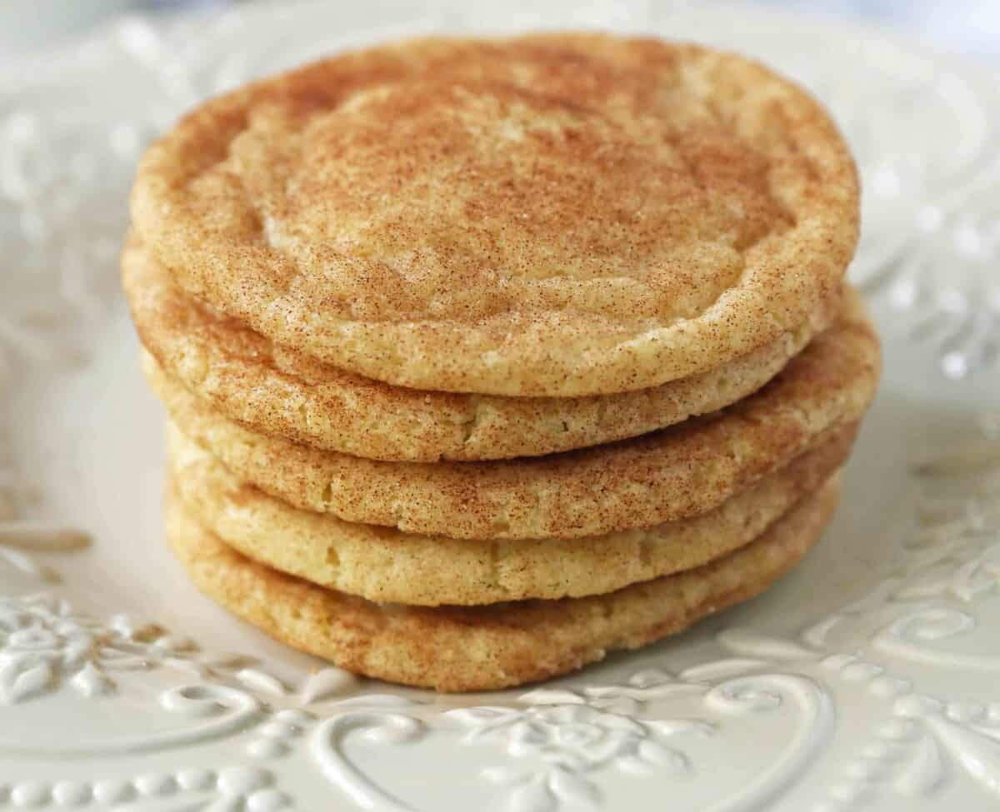

<--! Recipe title and image -->
The GREATEST Snickerdoodles you'll EVER have!

<--! Recipe description -->
Description
Snickerdoodles are a classic cookie that everyone loves. They are a soft and chewy sugar cookie that is coated in cinnamon sugar. They are a perfect treat for any occasion and are sure to be a hit with your friends and family.
<--! Ingredients for the recipe -->
Ingredients
- 1 cup unsalted butter, softened
- 1 1/2 cups sugar
- 2 large eggs
- 2 3/4 cups all-purpose flour
- 2 teaspoons cream of tartar
- 1 teaspoon baking soda
- 1/4 teaspoon salt
- 3 tablespoons sugar
- 3 teaspoons cinnamon
<--! Steps for the recipe -->
Steps
- Preheat oven to 350°F (177°C).
- In a large bowl, cream together the butter and 1 1/2 cups sugar until light and fluffy.
- Beat in the eggs one at a time, mixing well after each.
- Combine the flour, cream of tartar, baking soda, and salt in a separate bowl.
- Gradually add the dry ingredients to the wet ingredients, mixing until just combined.
- In a small bowl, combine the 3 tablespoons sugar and 3 teaspoons cinnamon.
- Shape dough into 1-inch balls and roll in the cinnamon sugar mixture.
- Place on ungreased cookie sheets and bake for 8-10 minutes or until set.
- Remove from oven and let cool on wire racks.